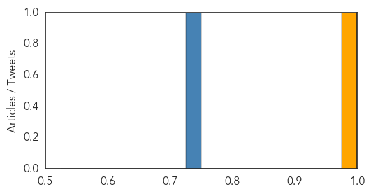
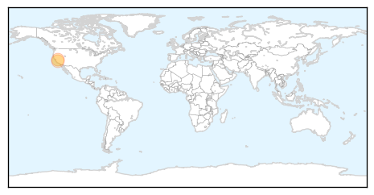

Cholera
30-Day Web Trend
0 alerts, 0 warnings
30-Day Twitter Trend
3 alerts, 0 warnings

Article Locations
Article Confidences
Top Articles:
Top Tweets:
- 0.608
- RT: WHO & partners are also responding to a cholera outbreak which has affected more than 1,600 ppl in SouthSudan’s Juba & Bor count…
Bubonic Plague
30-Day Web Trend
6 alerts, 0 warnings
30-Day Twitter Trend
0 alerts, 0 warnings

Article Locations
Article Confidences

Top Articles:
Top Tweets:
-
No tweets found for Aug 22, 2015